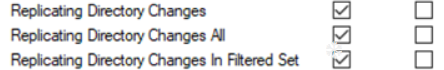

DCSync Attack
L'attacco è possibile solo se abbiamo già compromesso una macchina target e l'account ha i seguenti permessi:

- 1) 1) Avviamo mimikatz sulla macchina target
- 2) 2) Eseguiamo:
lsadump::dcsync /domain:DOMAIN /user:administrator
- 3) 3) Il DC ci restituisce l'hash NTLM che può essere utilizzato per l'attacco Pass The Hash e la compromissione del DC stesso.